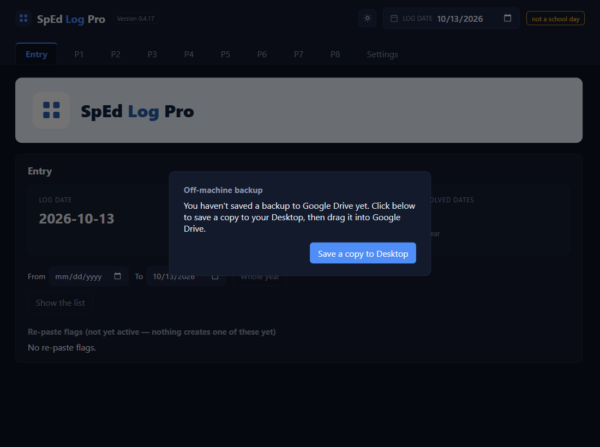

Install the app
Find the right file: the one whose name starts with Setup
You'll be given a file named like SpEd Log Pro v2 Setup 0.4.23.exe; the number at the end is the version. There may be a second file next to it with almost the same name but no word Setup. Ignore that one.
On a flash drive? Drag the Setup file to your Desktop first, then go to step 3. In Google Drive? Go to step 2.
Downloading from Google Drive? Click Download anyway, then Keep
Google Drive and your browser each show a warning. Both appear only because the file is large and not yet well known.
This file is too large for Google to scan. Would you still like to download it?
Click Download anyway, then Keep. In Edge, Keep may be hidden under the … next to the download, then Show more → Keep anyway. When it's done, the file is in your Downloads folder.
Double-click the Setup file. If Windows says it protected your PC: More info, then Run anyway
A blue box will probably appear. It doesn't block the app; it just hides the button. Click More info: the box now names the file and says Unknown publisher, and a Run anyway button appears. Click it.
Windows protected your PC
Microsoft Defender SmartScreen prevented an unrecognized app from starting. Running this app might put your PC at risk.
More info
Windows protected your PC
Let it install. It asks no questions
A small window shows a green bar for a few seconds. There's nothing to choose, no Next buttons, and no administrator password: it installs for you only. When the bar finishes, the window closes by itself.
The app opens by itself. Next time, use the Desktop icon
Setup puts a SpEd Log Pro v2 icon on your Desktop and in the Start menu, then opens the app for you. From now on, double-click that icon to open it. You can delete the Setup file now, or keep it in case you ever need to reinstall.
The first thing you see: a backup panel. That's expected
The app builds its own database and folders the first time it opens, with nothing to set up. Because you've never made a backup, a panel asking for one covers the screen straight away. That means the install worked. The next lesson walks you through it.

✓ You'll know it worked
- The app opened by itself after the green bar.
- A SpEd Log Pro v2 icon is on your Desktop.
- The backup panel is showing.
✕ Avoid these
- Running the other .exe. Use only the file whose name starts with Setup.
- Clicking Don't run. Click More info first; Run anyway is behind it.
- Installing on a shared computer. Use the computer you'll log on every day: your students' data stays on it.
⚠ If you see this
A message that your administrator blocked the app. Your district has turned off installing apps. Ask your technology office to run the Setup file.SpEd Log Pro v2 cannot be closed.The app is already installed and open. Close it and click Retry. (To install a newer version later, see Update to a new version.)